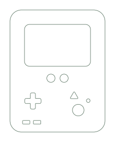

Have a conversation
Wake BMO up simply by saying “Hey BMO”. Whisper converts your speech into text and sends it to Groq to generate a reply. Piper then reads the response aloud.

Here’s what I’ve built into BMO’s software so far.
Wake BMO up simply by saying “Hey BMO”. Whisper converts your speech into text and sends it to Groq to generate a reply. Piper then reads the response aloud.
BMO blinks, listens, thinks and talks through animated expressions. Rhubarb synchronises the mouth movements with its speech.
Ask BMO to drive forwards or backwards, turn left or right, or follow a sequence of movements. Wheel encoders help track distance, while the gyroscope helps measure rotation during turns.
BMO can approach an obstacle and stop at a requested distance. It also uses the ultrasonic sensor as a safety measure during normal driving and turning to help avoid collisions.
Search the web, answer questions, share a fun fact, check the weather for a location, or report its battery level.
Wake BMO with the triangle button, or stop and shut down with the large red circle. Use the directional buttons to move the mouse cursor and the small green circle to click.
Download the original Fusion assembly and individual components. The ZIP contains 18 Fusion design files in .f3d and .f3z formats.
Unzip the folder, then import the designs into Fusion.